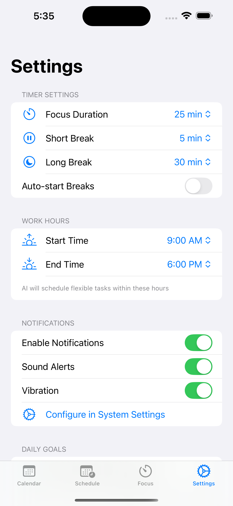
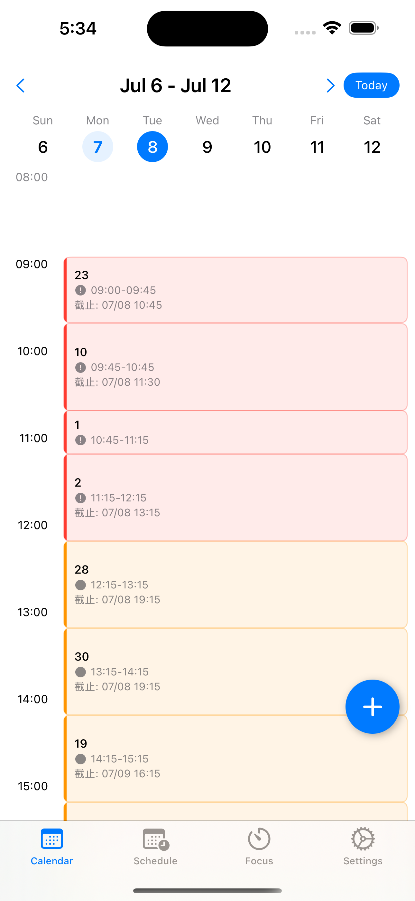
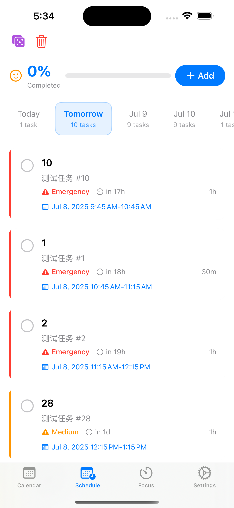
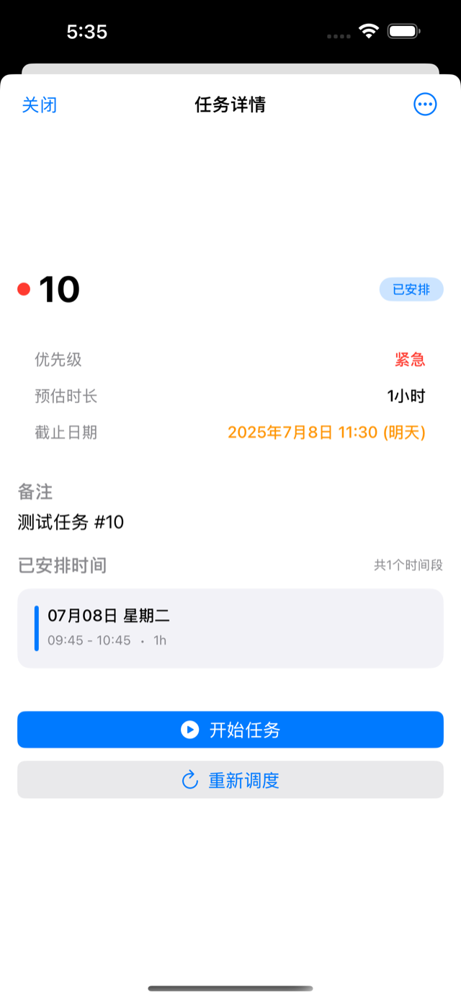

让 AI 帮您规划每一天
智能排程、灵活调度、专注管理，让时间管理变得简单高效。
- 🔒 数据全本地
- 📶 离线可用
- 🌏 中英双语
三步开启高效的一天
告诉它要做什么，剩下的交给 AI。
添加任务与截止
录入固定事件，或只填任务时长和 deadline，无需自己排时间。
AI 自动排入最优时段
按优先级和空档智能排程，自动避开冲突，长任务见缝插针。
专注计时并每周复盘
用内置番茄钟专注，自动记录时长，每周生成时间去向报告。
亲眼看 AI 排好你的一天
左边是待排任务，右边是今天的日程。点击按钮，看 AI 把任务填进空档。
任务清单
AI 排程是怎么想的
四步透明的排程流程，没有黑箱。
读取约束
时长 · 截止日期 · 优先级
扫描空档
避开固定事件，找出可用时段
冲突检测
重叠自动避让，日程始终干净
分片放置
长任务拆成片段，见缝插针推进
整个过程在设备本地完成，数据不离开手机
核心功能
为专注和掌控感而设计的每一个细节。
AI 智能排程
根据任务优先级和截止时间，自动安排最优时间段，避免冲突，提高效率。
灵活任务管理
区分固定事件和灵活任务，支持任务分片，让长任务也能见缝插针。
专注计时器
内置番茄钟，关联具体任务，追踪专注时长，提升工作效率。
数据统计
详细的时间使用报告，了解您的时间去向，持续优化时间管理。
中英双语
完美支持中文和英文界面，满足不同用户的使用习惯。
隐私优先
所有数据本地存储，无需网络连接，您的日程信息绝对安全。
为你的一天而设计
不同的日子，同一个聪明的排程引擎。
学生党
论文和复习只给个截止日期，AI 自动排进课表空档。
职场人
会议之间的碎片时间，自动变成整块的深度工作。
自由职业者
多项目并行，按优先级自动权衡先做哪个。
习惯养成者
健身、阅读固定成型，周报里看见自己的坚持。
应用截图
左右滑动，点击可放大查看。




为什么不继续手动排？
每一行都对应一个真实功能，不玩文字游戏。
| 场景 | 手动排程 | AI日历 |
|---|---|---|
| 会议突然改期 | 整天日程推倒重排 | 空档自动重算，冲突自动避开 |
| 2 小时的大任务 | 找不到整块时间，一拖再拖 | 自动分片，见缝插针地推进 |
| 临近截止日期 | 全靠记性和运气 | 按截止日期和优先级自动排入 |
| 时间都去哪了 | 凭感觉回忆 | 专注计时 + 每周时间报告 |
| 你的日程数据 | 云端日历上传到服务器 | 100% 本地存储，零追踪 |
您的日程，只属于您
没有账号，没有云端，没有追踪。AI 排程在设备本地完成，卸载即彻底清除。
- 数据本地存储
- 离线即可使用
- 无任何追踪
- 无广告干扰
常见问题
AI 排程需要联网吗？
不需要。AI 排程逻辑在设备本地运行，全程离线可用，您的日程数据不会离开手机。
数据会同步到云端吗？
所有数据都保存在您的设备本地，我们不上传、不收集、不追踪任何日程信息。
固定事件和灵活任务有什么区别？
固定事件有明确时间（如会议）；灵活任务只需时长和截止日期，AI 会把它们自动排入空档。
任务分片是怎么工作的？
较长的任务可被拆成多个片段，AI 见缝插针地分配到多个空闲时段，让长任务也能持续推进。
支持哪些语言和系统版本？
支持简体中文与英文双语，需要 iOS 17.0 或更高版本。
立即下载 AI日历
开始您的高效时间管理之旅。
需要 iOS 17.0 或更高版本